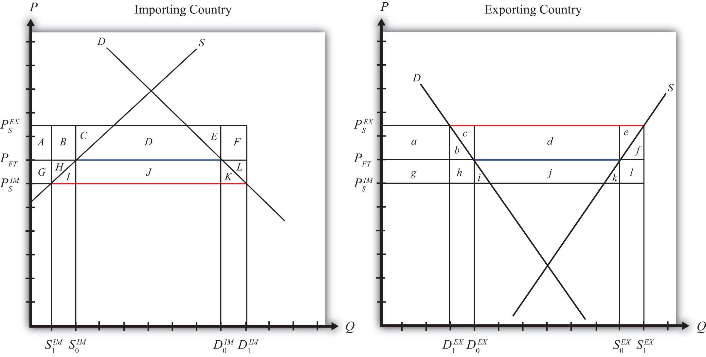
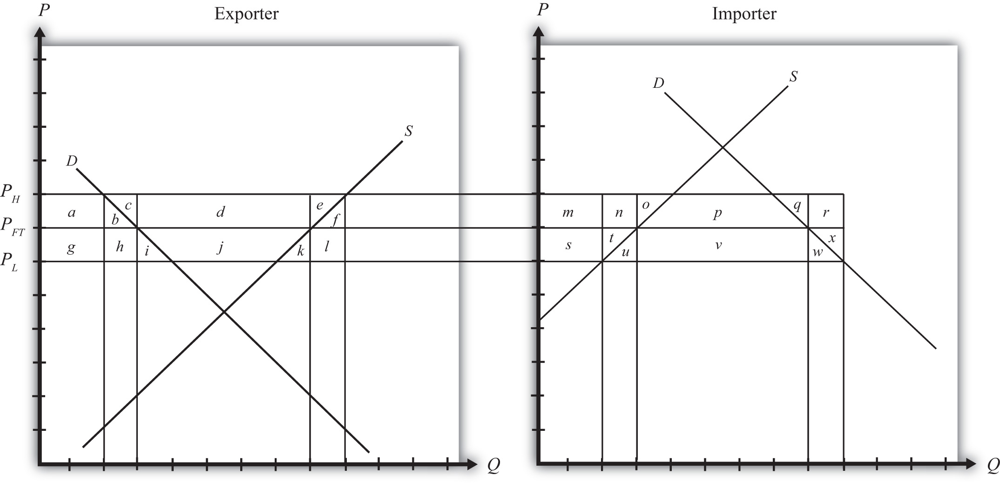

The World Trade Organization (WTO) allows countries to implement antisubsidy legislation. The law allows a country to place a countervailing duty (CVD)A tariff on a product levied against a country that subsidizes the export of that product and that causes injury to the import-competing industry. on imports when a foreign government subsidizes exports of the product, which in turn causes injury to the import-competing firms. The countervailing duty is a tariff designed to “counter” the effects of the foreign export subsidy. The purpose of this section is to explain the effects of a countervailing duty in a perfectly competitive market setting. See Chapter 1 "Introductory Trade Issues: History, Institutions, and Legal Framework", Section 1.5 "The General Agreement on Tariffs and Trade (GATT)" for a more complete description of the antisubsidy law.
We will assume that there are two large countries trading a particular product in a partial equilibrium model. The exporting country initially sets a specific export subsidy. That action is countered with a CVD implemented by the importing country. We will first describe the effects of the export subsidy (which will closely mimic the analysis in Chapter 7 "Trade Policy Effects with Perfectly Competitive Markets", Section 7.16 "Export Subsidies: Large Country Price Effects" and Chapter 7 "Trade Policy Effects with Perfectly Competitive Markets", Section 7.17 "Export Subsidies: Large Country Welfare Effects", after which we will consider the effects of the CVD action in response.
An export subsidy will reduce the price of the good in the import market and raise the price of the good in the export market relative to the free trade price. After the subsidy is imposed, the following two conditions will describe the new equilibrium:
and
where S is the specific export subsidy, is the price that prevails in the import market after the subsidy, and is the price that prevails in the export market after the subsidy. The first condition means that prices in the two countries must differ by the amount of the subsidy. The second condition means that export supply at the price that now prevails in the export market must equal import demand at the price that prevails in the import market.
The effects of the subsidy are depicted in Figure 7.33 "Depicting an Export Subsidy and a CVD". The initial free trade price is labeled PFT. In free trade, the exporting country exports (S0EX − D0EX) and the importing country imports (D0IM − S0IM). Since there are only two countries in the model, free trade exports are equal to imports and are shown as the blue line segments in the diagram. When the subsidy is imposed, the price in the export market rises to PSEX, while the price in the import market falls to PSIM. The higher level of exports with the subsidy, given by (S1EX − D1EX), is equal to imports, given by (D1IM − S1IM), and is depicted by the red line segments in Figure 7.30 "Effects of a World Price Decrease".
Figure 7.33 Depicting an Export Subsidy and a CVD
Table 7.12 "Welfare Effects of the Initial Export Subsidy" provides a summary of the direction and magnitude of the welfare effects to producers, consumers, and the governments in the importing and exporting countries as a result of the subsidy. The aggregate national welfare effects and the world welfare effects are also shown.
Table 7.12 Welfare Effects of the Initial Export Subsidy
| Importing Country | Exporting Country | |
|---|---|---|
| Consumer Surplus | + (G + H + I + J + K) | − (a + b) |
| Producer Surplus | − (G + H) | + (a + b + c + d + e) |
| Govt. Revenue | 0 | − (b + c + d + e + f + h + i + j + k + l) |
| National Welfare | + I + J + K | − (b + f + h + i + j + k + l) |
| World Welfare | − (I + K) − (b + f) |
Table 7.12 "Welfare Effects of the Initial Export Subsidy" shows that in the case of a large exporting country, the export producers benefit from the subsidy, while the consumers of the product in the exporting country lose. Because of the cost of the subsidy to the exporting country government, which must ultimately be paid by the taxpayers, the net national welfare effect for the exporting country is negative.
The importing country also experiences an income redistribution. The consumers in the importing country benefit from the foreign subsidy, while import-competing producers suffer losses. The net effect for the importing country is positive since the gains to consumers outweigh the losses to producers.
The world welfare effects of the export subsidy are also negative.
Despite the fact that the export subsidy generates net benefits for the importing country, the importing country is allowed under WTO rules to protect itself from these benefits. A CVD may be placed if it can be shown that a subsidy is indeed in place and if the subsidy causes injury to the import-competing firms.
It is worth emphasizing that the antisubsidy law, in this case, does not protect the “country,” nor does it protect consumers. The law is designed to aid import firms exclusively. No evaluation of the effects on consumers and no evaluation of the national welfare effects are required by the law. The only requirement is that injury be caused to the import-competing firms.
In this simple example of a large country implementing an export subsidy, injury would indeed be apparent. The export subsidy lowers the price of the good in the import market in this model and causes an increase in imports from abroad. Supply by the import-competing firms would fall (from S0IM to S1IM in Figure 7.33 "Depicting an Export Subsidy and a CVD"). Producer surplus, indicating a reduction in industry profits, would also fall. Since less output would be produced by the import-competing industry, the industry would need fewer factors of production. This would likely mean a reduction in the number of workers employed in the industry. In the adjustment process, firms in the industry may lay off workers and close factories. All these effects are valid criteria used to judge injury in CVD cases.
So let’s consider the effects of a countervailing duty in response to the export subsidy described above. A CVD is simply a tariff set on imports to counter the effects of the foreign export subsidy. CVD laws require that the size of the CVD be just enough to offset the effects of the export subsidy. In the United States, the U.S. International Trade Administration determines the size of the foreign subsidy. If a CVD action is taken, the CVD is set equal to the foreign subsidy.
So imagine that the importing country now sets a specific CVD (t) equal to the original export subsidy (S). As with any tariff set by a large importing country, the tariff will cause the price in the importing country to rise and the price in the exporting country to fall. What’s different from the standard tariff analysis is that the prices in this case are not equal to each other. Instead, the price in the import market begins lower—by the amount of the export subsidy, S—than the price in the export market. The CVD, then, will drive the prices in the two markets back together.
The final equilibrium must satisfy the following two conditions:
and
However, since t = S, the first condition reduces to . This means that in the final equilibrium, the prices must be equal in both countries and export supply must be equal to import demand. These conditions are satisfied only at the free trade price.
Thus the effect of the CVD is to force the prices in the two markets back to the free trade prices.
As a result, imports will fall in the importing country (back to D0IM − S0IM in Figure 7.33 "Depicting an Export Subsidy and a CVD"), domestic supply will rise (from S1IM to S0IM), employment in the import-competing industry will rise, and producer surplus in the industry will also rise. Thus the CVD will be effective in eliminating the injury caused to import-competing firms.
But let’s also take a look at the overall welfare effects of the CVD, assuming, as is often the case, that the CVD and the export subsidy remain in place. There are two ways to consider the effects of the CVD. We can look at the effects relative to when just the export subsidy was in place. Or we can look at the effects relative to when there was no export subsidy and no CVD. We’ll do it both ways.
First, let’s consider the welfare effects of the CVD relative to when the export subsidy alone was in place. These effects are summarized in Table 7.13 "Welfare Effects of a CVD".
Table 7.13 Welfare Effects of a CVD
| Importing Country | Exporting Country | |
|---|---|---|
| Consumer Surplus | − (G + H + I + J + K) | + (a + b) |
| Producer Surplus | + (G + H) | − (a + b + c + d + e) |
| Govt. Revenue | + (C + D + E + J) | + (b + c + e + f + h + l) |
| National Welfare | + (C + D + E) − (I + K) | + (b + f + h + l) − (d) |
| World Welfare | + (b + f + h + l) − (I + K) = | b + f + I + K |
Note that the effects on consumers and producers in both countries are equal and opposite to the effects of the export subsidy. Thus producers in the import-competing industry gain in surplus from the CVD exactly what they had lost as a result of the foreign export subsidy. Consumers in the import industry lose from the CVD, producers in the exporting country lose, and consumers in the exporting country gain.
The importing government now collects tariff revenue from the CVD, which benefits someone in the importing country. The exporting government, however, experiences a reduction in its subsidy expenditures. This occurs because the CVD reduces trade and thus reduces the number of units exported. As a result, the government (i.e., the taxpayers) in the exporting country benefits from the CVD.
The national welfare effects in both countries are ambiguous in general. In the importing country, a terms of trade gain may outweigh two deadweight losses and cause national welfare to rise even further. Interestingly, the export subsidy and the CVD may each raise welfare for the importing country. In the export country, the net national welfare effect may be positive or negative.
The world welfare effects are found by summing the national welfare effects on both countries. The expression is simplified first by noting that area (C + D + E) = area (d) and second by noting that area (h) = twice area I, or (2I), and area (l) = area (2K). The final expression shows that world welfare will rise as a result of the CVD.
Next, let’s consider the welfare effects of the export subsidy and the CVD combined. In this case, we compare the welfare status of each country after both policies are in place relative to when neither policy is imposed. The effects can be calculated either by summing the individual welfare effects of each of the two stages depicted above or by noting that prices have not changed from the initial presubsidy state to the final post-CVD state but that the governments do have expenditures and receipts, respectively.
The welfare effects are summarized in Table 7.14 "Welfare Effects of an Export Subsidy plus a CVD".
Table 7.14 Welfare Effects of an Export Subsidy plus a CVD
| Importing Country | Exporting Country | |
|---|---|---|
| Consumer Surplus | 0 | 0 |
| Producer Surplus | 0 | 0 |
| Govt. Revenue | + (C + D + E + J) | − (d + i + j + k) |
| National Welfare | + (C + D + E + J) | − (d + i + j + k) |
| World Welfare | 0 |
Since the prices in each country after the CVD are the same as prices before the export subsidy, there is ultimately no change in producer or consumer surplus in either country. Everyone participating in the market is left as well off as they were at the start.
However, since the exporting country maintains the export subsidy and the import country maintains the CVD, there are government revenue effects. In the exporting country, the government continues to make expenditures for the export subsidy. This represents a cost to the country’s taxpayers that does not even generate the intended benefit for the export industry. In the importing country, the government collects tariff revenue as a result of the CVD. This generates benefits to the recipients of the resulting additional government spending.
The net national welfare effect in each country is the same as the government effects. This means that the importing country benefits from the export subsidy plus CVD, while the exporting country loses from the combined policies.
The world welfare effect of the combined policies is neutral. This means that the exporting country loses exactly the same amount as the importing country gains. The ultimate effect of the export subsidy plus the CVD is that the exporting country’s government transfers money to the importing country’s government with consumers and producers left unaffected. In practice, exporting country producers receive an export subsidy payment from their government when their product leaves the port bound for the importing country. When the product arrives, the importing country’s government collects a tariff (or a CVD) exactly equal to the subsidy payment. Thus the export firms turn over the extra monies they had just received from their own government to the government of the importing country.
These effects described here hold only for markets that are perfectly competitive. If the markets are oligopolistic, or contain market imperfections or other distortions, then the effects of the export subsidy and CVD may differ.
Jeopardy Questions. As in the popular television game show, you are given an answer to a question and you must respond with the question. For example, if the answer is “a tax on imports,” then the correct question is “What is a tariff?”
Consider a market for computers in two large countries. Suppose the exporting country imposes a specific export subsidy equal to PH − PL. Afterward, the importing country retaliates with a countervailing duty also set equal to PH − PL. Use the diagram below to answer the following questions.
Figure 7.34 Two Large Trading Countries
